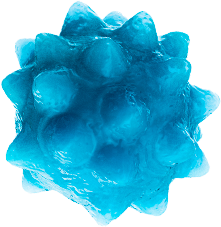

Привет,
ЭТО НЕ
КОММЕРЧЕСКОЕ
ЗАДАНИЕ
КОММЕРЧЕСКОЕ
ЗАДАНИЕ

Текст
Сообщения
Сообщения
Сперматозо́ид (от др.-греч. σπέρμα род. п. σπέρματος здесь «сперма» + ζωή «жизнь» + εἶδος «вид, облик», лат. spermatozoon, spermium) — мужская половая клетка (гамета) размножающихся посредством оогамии организмов
Сперматозоиды обычно обладают способностью к активному движению и служат для оплодотворения женской гаметы — яйцеклетки. Обычно они значительно меньше яйцеклеток, поскольку не содержат столь значительного количества цитоплазмы и производятся организмом одновременно в значительном количестве. Типичное строение сперматозоида отражает форму общего предка животных и грибов: одноклеточный ядерный организм, передвигающийся за счёт жгутика в задней части, используя его подобно хвосту. Обширная группа происходящих от него организмов включает в себя животных, большинство грибов и некоторые группы протистов и называется кланом заднежгутиковых. Большинство других эукариот со жгутиками имеют их в передней части. В широком смысле слова по традиции сперматозоидами иногда называют мужские половые клетки также у растений, к ним применяют также термины спермии или антерозоиды (их применяют также к традиционно сближавшимся с растениями грибам)
https://ru.wikipedia.org/wiki/сперматозоид
Сперматозоиды обычно обладают способностью к активному движению и служат для оплодотворения женской гаметы — яйцеклетки. Обычно они значительно меньше яйцеклеток, поскольку не содержат столь значительного количества цитоплазмы и производятся организмом одновременно в значительном количестве. Типичное строение сперматозоида отражает форму общего предка животных и грибов: одноклеточный ядерный организм, передвигающийся за счёт жгутика в задней части, используя его подобно хвосту. Обширная группа происходящих от него организмов включает в себя животных, большинство грибов и некоторые группы протистов и называется кланом заднежгутиковых. Большинство других эукариот со жгутиками имеют их в передней части. В широком смысле слова по традиции сперматозоидами иногда называют мужские половые клетки также у растений, к ним применяют также термины спермии или антерозоиды (их применяют также к традиционно сближавшимся с растениями грибам)
https://ru.wikipedia.org/wiki/сперматозоид
Ключевое сообщение
BRENDXY
3 раза в день после
еды. После приема
препарата рекомен-
дуется воздержаться
от пищи и напитков
в течение 1 часа
еды. После приема
препарата рекомен-
дуется воздержаться
от пищи и напитков
в течение 1 часа
Курс лечения от
7 дней до 1 мес.
7 дней до 1 мес.
Преимущества
BRENDXY
01
Самое важное и ключевое преимущество
нашего препарата
нашего препарата
02
Второе по важности преимущество
03
Еще одно важное преимущество препарата
04
Еще одно не менее важное преимущество
препарата
препарата
05
Еще одно важное преимущество препарата
06
Еще одно важное преимущество препарата
<
>